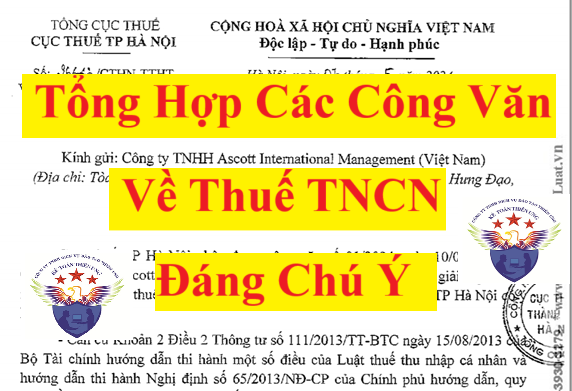

Tổng hợp các công văn mới nhất năm 2025 hướng dẫn về thuế thu nhập cá nhân
Chứng từ khấu trừ thuế cấp từ 1/6/2025 phải áp dụng mẫu mới
Theo Công văn số 2113/CT-CS ngày 28/6/2025 của Cục Thuế về chứng từ điện tử thì:
Theo Công văn số 2113/CT-CS ngày 28/6/2025 của Cục Thuế về chứng từ điện tử thì:
Tại khoản 2 Điều 12 Thông tư số 32/2025/TT-BTC đã quy định rõ, kể từ ngày 1/6/2025, tổ chức khấu trừ thuế thu nhập cá nhân phải ngừng sử dụng chứng từ khấu trừ thuế điện tử theo quy định cũ và chuyển sang áp dụng chứng từ khấu trừ thuế điện tử theo quy định của Nghị định số 70/2025/NĐ-CP.
Trường hợp sau thời điểm sử dụng chứng từ khấu trừ thuế điện tử theo quy định mới, nếu phát hiện chứng từ khấu trừ thuế cấp theo quy định cũ bị sai thì được lập chứng từ khấu trừ thuế điện tử mới thay thế.
Người lao động trực tiếp quyết toán thuế phải nộp đủ chứng từ đã khấu trừ thuế
Công văn số 1992/CT-CS ngày 24/6/2025 của Cục Thuế về sử dụng chứng từ khấu trừ thuế thu nhập cá nhân
Công văn số 1992/CT-CS ngày 24/6/2025 của Cục Thuế về sử dụng chứng từ khấu trừ thuế thu nhập cá nhân
Theo quy định tại khoản 2 Điều 25 Thông tư 111/2013/TT-BTC, đối với người lao động ủy quyền cho doanh nghiệp (tổ chức trả thu nhập) quyết toán thuế TNCN thì doanh nghiệp không phải cấp chứng từ khấu trừ thuế.
Ngược lại, đối với người lao động tự quyết toán thuế TNCN, doanh nghiệp phải cấp chứng từ khấu trừ thuế cho người lao động để nộp trong hồ sơ quyết toán thuế với mục đích chứng minh số thuế TNCN đã được khấu trừ trong năm.
Cũng theo Cục Thuế, mặc dù thời hạn quyết toán thuế của cá nhân kết thúc sau thời hạn quyết toán thuế TNCN của doanh nghiệp (Điều 44 Luật Quản lý thuế số 38/2019/QH14) nhưng có một số trường hợp sau khi kết thúc năm dương lịch cá nhân đã thực hiện quyết toán thuế trước khi doanh nghiệp khai quyết toán thuế TNCN nên hệ thống ngành thuế chưa có đầy đủ thông tin về mức thu nhập và số thuế TNCN đã khấu trừ của cá nhân. Khi đó, chứng từ khấu trừ thuế TNCN là căn cứ để cá nhân thực hiện quyết toán thuế và là cơ sở để cơ quan thuế đối soát với thông tin kê khai trên hồ sơ khai thuế.
Còn trường hợp doanh nghiệp đã thực hiện quyết toán thuế TNCN, thông tin thu nhập, số thuế đã khấu trừ của cá nhân được kê khai đầy đủ lên hệ thống ngành thuế, doanh nghiệp đã cấp chứng từ khấu trừ thuế cho cá nhân trực tiếp quyết toán thuế thì người lao động sẽ có thể đối chiếu chéo thông tin thu nhập, số thuế đã khấu trừ giữa doanh nghiệp và người lao động, tránh một số trường hợp doanh nghiệp kê khai sai thu nhập, số thuế đã khấu trừ.
Riêng với các trường hợp doanh nghiệp không thể cấp chứng từ khấu trừ thuế TNCN do đã chấm dứt hoạt động thì cơ quan thuế sẽ tự căn cứ vào cơ sở dữ liệu của ngành thuế để xem xét xử lý hồ sơ quyết toán thuế cho cá nhân mà không bắt buộc phải có chứng từ khấu trừ thuế.
Kể từ ngày 1/6/2025, việc sử dụng dữ liệu chứng từ khấu trừ thuế TNCN điện tử sẽ được thực hiện theo quy định mới tại Nghị định 70/2025/NĐ-CP và Thông tư 32/2025/TT-BTC.
Cá nhân cho thuê tài sản, nộp thuế bao nhiêu?
Công văn số 1556/CT-CS ngày 3/6/2025 của Cục Thuế về chính sách thuế đối với hộ kinh doanh, cá nhân kinh doanh
Tỷ lệ tính thuế GTGT, thuế TNCN đối với hộ, cá nhân kinh doanh đã được quy định cụ thể tại Phụ lục I của Thông tư 40/2021/TT-BTC.
Theo đó, trường hợp cá nhân cho thuê tài sản nếu có kèm theo dịch vụ thì áp dụng tỷ lệ tính thuế GTGT là 5% và tỷ lệ tính thuế TNCN là 2%; nếu cho thuê tài sản không kèm theo dịch vụ thì tỷ lệ tính thuế GTGT là 5% và tỷ lệ tính thuế TNCN là 5%.
Có từ 2 bất động sản trở lên sẽ không được miễn thuế TNCN khi chuyển nhượng
Công văn số 1428/CT-CS ngày 28/5/2025 của Cục Thuế về chính sách thuế thu nhập cá nhân
Trường hợp cá nhân có đến hai căn nhà tại thời điểm chuyển nhượng nhà ở thì không thuộc trường hợp và không đáp ứng điều kiện được miễn thuế TNCN theo diện chuyển nhượng nhà ở, đất ở duy nhất theo quy định tại khoản 2 Điều 4 Luật Thuế thu nhập cá nhân số 04/2007/QH12.
Cụ thể, cá nhân được miễn thuế theo diện chuyển nhượng nhà ở, đất ở duy nhất phải đáp ứng đồng thời các điều kiện quy định tại điểm b khoản 1 Điều 3 Thông tư 111/2013/TT-BTC. Trong đó, có điều kiện là chỉ có duy nhất quyền sở hữu một nhà ở hoặc quyền sử dụng một thửa đất ở tại thời điểm chuyển nhượng.
Phí môi giới trả cho cá nhân ở nước ngoài có bị khấu trừ thuế?
Công văn số 2223/CCTKV18-QLDN2 ngày 23/5/2025 của Chi cục thuế khu vực XVIII về chính sách thuế
Trường hợp Công ty ký hợp đồng môi giới bán hàng đối với cá nhân đang làm việc và sinh sống tại nước ngoài không đáp ứng điều kiện quy định tại khoản 1 Điều 1 Thông tư 111/2013/TT-BTC thì người này được xác định là cá nhân không cư trú tại Việt Nam.
Đối với cá nhân không cư trú có thu nhập chịu thuế từ tiền lương, tiền công thì áp dụng mức thuế suất thuế TNCN là 20% theo quy định tại khoản 1 Điều 18 Thông tư 111/2013/TT-BTC.
Trường hợp Công ty ký hợp đồng với cá nhân về môi giới bán hàng hóa, cung cấp dịch vụ ra nước ngoài đáp ứng điều kiện theo quy định tại khoản 4 Điều 2 Thông tư 103/2014/TT-BTC thì khoản thu nhập từ môi giới bán hàng hóa, cung cấp dịch vụ của cá nhân thuộc đối tượng không áp dụng thuế nhà thầu.
Thuế TNCN nộp thừa sẽ được hoàn lại hay chỉ được bù trừ cho kỳ sau?
Công văn số 8006/CCTKV.XVI-QLDN2 ngày 21/5/2025 của Chi cục Thuế khu vực XVI về việc xử lý số tiền thuế, tiền chậm nộp, tiền phạt nộp thừa
Theo quy định tại điểm a, điểm b khoản 1 Điều 25 Thông tư 80/2021/TT-BTC, trường hợp Công ty có các khoản nộp thừa tiền thuế TNCN thì Công ty được phép bù trừ vào số tiền thuế phát sinh phải nộp của lần tiếp theo có cùng nội dung kinh tế (tiểu mục) và cùng địa bàn thu với khoản nộp thừa hoặc đề nghị cơ quan thuế hoàn trả (nếu sau khi bù trừ xong vẫn còn thừa).
Hồ sơ hoàn thuế TNCN nộp thừa thực hiện theo quy định tại khoản 1 Điều 42 Thông tư 80/2021/TT-BTC
Phí mua bảo hiểm sức khỏe cho người lao động được miễn thuế TNCN
Công văn số 7813/CCTKV.XVI-QLDN2 ngày 16/5/2025 của Chi cục thuế khu vực XVI về chính sách thuế TNCN
Theo quy định tại khoản 3 Điều 11 Thông tư 92/2015/TT-BTC, trường hợp Công ty mua cho người lao động sản phẩm bảo hiểm sức khoẻ là bảo hiểm không bắt buộc và không có tích luỹ về phí bảo hiểm thì khoản phí mua bảo hiểm này không phải tính vào thu nhập chịu thuế TNCN.
Tuy nhiên, trường hợp Công ty mua cho người lao động sản phẩm bảo hiểm nhân thọ là bảo hiểm không bắt buộc và có tích luỹ về phí bảo hiểm thì khoản phí mua bảo hiểm này được xác định là thu nhập chịu thuế TNCN.
Trả phí môi giới cho cá nhân có phải khấu trừ thuế?
Công văn số 1105/CT-CS ngày 9/5/2025 của Cục Thuế về chính sách thuế đối với khoản chi phí hoa hồng môi giới
Theo Cục Thuế, doanh nghiệp cần phải xác định cá nhân môi giới bán hàng là cá nhân không đăng ký kinh doanh hay cá nhân đáp ứng điều kiện là thương nhân, đồng thời căn cứ bản chất hợp đồng đã ký để xác định loại thu nhập chịu thuế (thu nhập từ kinh doanh hoặc từ tiền lương, tiền công) để làm căn cứ tính thuế, khai thuế, nộp thuế theo quy định.
Trường hợp cá nhân ký hợp đồng môi giới bán hàng là cá nhân không đăng ký kinh doanh, không thuộc đối tượng áp dụng tại Điều 2 Thông tư 40/2021/TT-BTC thì thu nhập của cá nhân được xác định là thu nhập từ tiền lương tiền công theo quy định tại điểm c khoản 2 Điều 2 Thông tư 111/2013/TT-BTC. Doanh nghiệp có trách nhiệm khấu trừ thuế, khai thuế theo hướng dẫn tại điểm i khoản 1 Điều 25 Thông tư 111/2013/TT-BTC.
Ngược lại, nếu cá nhân ký hợp đồng môi giới bán hàng đáp ứng điều kiện là thương nhân theo Điều 6 Luật Thương mại số 36/2005/QH11 (cá nhân hoạt động thương mại một cách độc lập, thường xuyên và có đăng ký kinh doanh theo hình thức hộ kinh doanh) thì thu nhập của cá nhân được xác định là thu nhập từ kinh doanh theo quy định tại Điều 2 Thông tư 40/2021/TT-BTC.
Trường hợp doanh nghiệp thuê tổ chức, cá nhân nước ngoài thực hiện dịch vụ môi giới bán hàng hóa, cung cấp dịch vụ mà các dịch vụ này được thực hiện ở nước ngoài thì không thuộc đối tượng áp dụng thuế nhà thầu theo quy định tại khoản 4 Điều 2 Thông tư 103/2014/TT-BTC.
Đối với các khoản chi hoa hồng môi giới nếu đáp ứng các điều kiện để tính vào chi phí được trừ và không thuộc các khoản chi không được trừ theo pháp luật thuế TNDN thì doanh nghiệp được tính khoản chi phí môi giới nêu trên vào chi phí được trừ khi tính thuế TNDN.
Thuế TNCN nộp thừa khi quyết toán được tự động cấn trừ vào kỳ sau
Công văn số 783/CCTKV17-QLDN1 ngày 8/5/2025 của Chi cục thuế khu vực XVII về chính sách thuế
Theo trả lời của Chi cục thuế khu vực XVII, căn cứ khoản 1, khoản 2 Điều 25 Thông tư 80/2021/TT-BTC, trường hợp Công ty có phát sinh số tiền thuế nộp thừa từ quyết toán thuế TNCN thì được trừ vào số tiền thuế phát sinh phải nộp của lần tiếp theo có cùng nội dung kinh tế (tiểu mục) và cùng địa bàn thu ngân sách với khoản nộp thừa.
Trường hợp theo Quyết toán thuế TNCN năm 2024, Công ty phát sinh số tiền thuế nộp thừa của cá nhân ủy quyền quyết toán thì được trừ vào số thuế phải nộp của kỳ tiếp theo, nếu còn thừa Công ty không phải cung cấp “DS chi tiết số tiền nộp thuế TNCN đã nộp thay” (theo hướng dẫn tại công văn số 828/ TCT-KK ngày 25/2/2025) do không có chứng từ nộp thuế.
Chơi casino trực tuyến có bị tính thuế?
Công văn số 1067/CT-CS ngày 7/5/2025 của Cục Thuế về chính sách thuế TNCN
Liên quan đến thuế TNCN đối với tiền trúng thưởng khi chơi casino, Cục Thuế đã lưu ý, hiện nay pháp luật thuế của Việt Nam chỉ quy định chính sách thuế đối với cá nhân có thu nhập từ trúng thưởng khi chơi casino trực tiếp tại các điểm kinh doanh casino của doanh nghiệp được cấp phép kinh doanh casino theo quy định của pháp luật.
Đồng thời, theo quy định tại Điều 5 Nghị định 03/2017/NĐ-CP, doanh nghiệp kinh doanh casino chỉ được phép tổ chức kinh doanh casino tại một địa điểm được cơ quan quản lý có thẩm quyền cấp phép kinh doanh casino theo quy định. Chính phủ Việt Nam không cấp phép cho các hoạt động kinh doanh cờ bạc trực tuyến. Các dịch vụ, hoạt động cá độ, cá cược, cờ bạc trực tuyến là những dịch vụ, hoạt động bị cấm tại Việt Nam. Mức xử phạt hành chính, hình sự đối với hành vi đánh bạc trái phép đã được quy định tại Điều 28 Nghị định 144/2021/NĐ-CP và Điều 321 Bộ Luật hình sự năm 2015.
Tiền lương ca đêm được miễn thuế TNCN phần phụ trội
Công văn số 632/CT-CS ngày 16/4/2025 của Cục Thuế về chính sách thuế thu nhập cá nhân
theo quy định tại Điều 98 Bộ luật Lao động số 45/2019/QH14 và điểm i khoản 1 Điều 3, điểm a khoản 2 Điều 8 Thông tư 111/2013/TT-BTC thì thu nhập từ phần tiền lương, tiền công làm việc ban đêm, làm thêm giờ được trả cao hơn so với tiền lương, tiền công làm việc ban ngày, làm việc trong giờ bình thường được miễn tính thuế thu nhập cá nhân.
Thu nhập từ quản lý đại lý bảo hiểm chịu thuế TNCN theo diện tiền lương hay kinh doanh?
Công văn số 528/CT-CS ngày 10/4/2025 của Cục Thuế về chính sách thuế TNCN
Theo Cục Thuế, trường hợp Công ty thuê cá nhân làm quản lý đại lý bảo hiểm theo hình thức ký hợp đồng lao động và người này không phải là cá nhân kinh doanh, không thuộc đối tượng áp dụng tại Điều 2 Thông tư 40/2021/TT-BTC thì thu nhập của cá nhân này được xác định là tiền lương, tiền công theo quy định tại điểm c khoản 2 Điều 2 Thông tư 111/2013/TT-BTC.
Trường hợp người ký hợp đồng làm quản lý đại lý bảo hiểm là cá nhân kinh doanh, thu nhập của cá nhân này được xác định là thu nhập từ kinh doanh thì cá nhân phải thực hiện kê khai, nộp thuế theo quy định tại Thông tư 40/2021/TT-BTC (nếu thu nhập từ kinh doanh trên 100 triệu đồng/năm).
Công văn số 532/CT-CS ngày 10/4/2025 của Cục Thuế về chính sách thuế thì:
+ Trường hợp cá nhân ký hợp đồng cung cấp dịch vụ cho doanh nghiệp nếu là cá nhân không có đăng ký kinh doanh, không thuộc đối tượng áp dụng tại Điều 2 Thông tư 40/2021/TT-BTC thì thu nhập của cá nhân này được xác định là thu nhập từ tiền lương tiền công theo quy định tại điểm c, khoản 2 Điều 2 Thông tư 111/2013/TT-BTC. Doanh nghiệp có trách nhiệm khấu trừ thuế, khai thuế theo hướng dẫn tại điểm i, khoản 1 Điều 25 Thông tư 111/2013/TT-BTC.
+ Ngược lại, nếu cá nhân ký hợp đồng cung cấp dịch vụ cho doanh nghiệp đáp ứng điều kiện là thương nhân (cá nhân hoạt động thương mại một cách độc lập, thường xuyên và có đăng ký kinh doanh cùng ngành nghề với hợp đồng dịch vụ) thì thu nhập của cá nhân này được xác định là thu nhập từ kinh doanh theo quy định tại Điều 2 Thông tư 40/2021/TT-BTC
Doanh nghiệp sẽ phải kê khai số thuế nộp thay cho từng người lao động
Theo Công văn số 828/TCT-KK ngày 25/2/2025 của Tổng cục Thuế về việc triển khai cung cấp thông tin số thuế TNCN đã nộp thay cho cá nhân
Theo thông báo của Tổng cục Thuế, các doanh nghiệp có khấu trừ, nộp thay thuế TNCN cho người lao động phát sinh thu nhập từ tiền lương, tiền công sẽ phải cung cấp thông tin về số thuế TNCN đã nộp thay cho từng người lao động theo chứng từ nộp thuế TNCN. Yêu cầu này nhằm phục vụ cho việc triển khai Quy trình hoàn thuế TNCN tự động kể từ năm 2025.
Cụ thể các thông tin phải cung cấp cho cơ quan thuế (nơi nộp hồ sơ khai thuế) bao gồm: thông tin chung của chứng từ nộp thuế; thông tin chi tiết của từng cá nhân được khấu trừ nộp thay (MST, tên người nộp thuế, số tiền thuế đã khấu trừ, số tiền thuế đã nộp vào ngân sách nhà nước, số thuế đã nộp thừa kỳ trước được bù trừ (nếu có).
Hình thức cung cấp thông tin qua Cổng thông tin điện tử của Tổng cục Thuế. Hiện tại, Tổng cục Thuế đã nâng cấp ứng dụng HTKK để hỗ trợ doanh nghiệp lập và kết xuất file danh sách chi tiết số thuế TNCN đã nộp cho từng người lao động để gửi lên Cổng thông tin của Tổng cục Thuế ngay sau khi hoàn thành nộp thuế. Hướng dẫn cách thực hiện theo phụ lục đính kèm.
Chi tiết các bạn xem thêm tại đây nhé: Cách hoàn thuế thu nhập cá nhân tự động qua Etax Mobile 2025
Chi tiết các bạn xem thêm tại đây nhé: Cách hoàn thuế thu nhập cá nhân tự động qua Etax Mobile 2025
Tính, khấu trừ thuế TNCN đối với cá nhân ký hợp đồng dịch vụ
Trường hợp cá nhân cư trú có thu nhập từ tiền lương, tiền công được trả từ nước ngoài hoặc cá nhân không cư trú có thu nhập từ tiền lương, tiền công phát sinh tại Việt Nam nhưng được trả từ nước ngoài thì đều thuộc diện trực tiếp khai thuế theo quy định tại tiết a.2 điểm a khoản 3 Điều 19 Thông tư 80/2021/TT-BTC.
Chứng từ khấu trừ thuế TNCN có sai sót, phải thu hồi và lập lại
Công văn số 418/TCT-DNNCN ngày 23/1/2025 của Tổng cục Thuế về chính sách thuế
Theo hướng dẫn của Tổng cục Thuế, trường hợp Công ty ký hợp đồng dịch vụ (như hợp đồng đại lý bán hàng, hợp đồng hợp tác, hợp đồng cung cấp dịch vụ cho các công ty viễn thông; hợp đồng dịch vụ giao nhận hàng hoá) với cá nhân không có đăng ký kinh doanh thì thu nhập của cá nhân này được xác định là thu nhập từ tiền lương tiền công theo quy định tại điểm c khoản 2 Điều 2 Thông tư 111/2013/TT-BTC. Công ty có trách nhiệm khấu trừ, khai nộp thuế theo hướng dẫn tại điểm i khoản 1 Điều 25 Thông tư 111/2013/TT-BTC.
Trường hợp cá nhân ký hợp đồng dịch vụ (các hợp đồng kể trên) với Công ty đáp ứng điều kiện là thương nhân (tức là cá nhân có đăng ký kinh doanh cùng ngành nghề với hợp đồng dịch vụ ký kết) thì thu nhập của cá nhân này được xác định là thu nhập từ kinh doanh theo quy định tại Điều 2 Thông tư 40/2021/TT-BTC.
Cá nhân phải tự khai thuế cho khoản thu nhập được trả từ nước ngoài
Theo Công văn số 227/CTTVI-TTHT ngày 21/1/2025 của Cục Thuế Trà Vinh về chính sách thuế đối với thu nhập từ nước ngoài
Trường hợp cá nhân cư trú có thu nhập từ tiền lương, tiền công được trả từ nước ngoài hoặc cá nhân không cư trú có thu nhập từ tiền lương, tiền công phát sinh tại Việt Nam nhưng được trả từ nước ngoài thì đều thuộc diện trực tiếp khai thuế theo quy định tại tiết a.2 điểm a khoản 3 Điều 19 Thông tư 80/2021/TT-BTC.
Hồ sơ khai thuế TNCN đối với cá nhân có thu nhập từ tiền lương, tiền công thuộc diện trực tiếp khai thuế thực hiện theo hướng dẫn tại điểm 9.2 Mục 9 Phụ lục I ban hành kèm Nghị định 126/2020/NĐ-CP.
Về căn cứ tính thuế TNCN, được thực hiện theo quy định tại Điều 18 Thông tư 111/2013/TT-BTC (đối với cá nhân không cư trú) và theo quy định tại Điều 7 Thông tư 111/2013/TT-BTC (đối với cá nhân cư trú).
Việc xác định thu nhập chịu thuế TNCN đối với cá nhân cư trú, cá nhân không cư trú thực hiện theo quy định tại Điều 2 Thông tư 119/2014/TT-BTC.
Tiền thưởng cho nhân viên có phải khấu trừ thuế TNCN
Theo Công văn số 64688/CTHN-TTHT ngày 5/12/2024 của Cục Thuế TP. Hà Nội hướng dẫn về thuế TNCN của giải thưởng cho nhân viên
Cục thuế TP. Hà Nội lưu ý, trường hợp Công ty trao phần thưởng cho nhân viên, gồm các khoản thưởng bằng tiền hoặc không bằng tiền dưới mọi hình thức trừ các khoản tiền thưởng tại điểm e khoản 2 Điều 2 Thông tư 111/2013/TT-BTC thì thuộc thu nhập chịu thuế TNCN. Công ty phải khấu trừ thuế TNCN theo hướng dẫn tại khoản 1 Điều 25 Thông tư 111/2013/TT-BTC.
Trường hợp nội dung chi trả không ghi tên cá nhân được hưởng mà chi chung cho tập thể người lao động thì khoản thu nhập này được miễn khấu trừ thuế TNCN theo hướng dẫn tại điểm đ.3.2 khoản 2 Điều 2 Thông tư 111/2013/TT-BTC.
Chứng từ khấu trừ thuế TNCN có sai sót, phải thu hồi và lập lại
Căn cứ khoản 4 Điều 4 Thông tư 37/2010/TT-BTC ngày 18/3/2010 hướng dẫn về sử dụng chứng từ khấu trừ tự in như sau:
“Điều 4. Sử dụng chứng từ khấu trừ tự in
4- Trường hợp lập lại chứng từ khấu trừ.
Những trường hợp chứng từ khấu trừ đã được lập và giao cho người nộp thuế, sau đó phát hiện sai phải lập lại chứng từ khấu trừ thay thế thì tổ chức trả thu nhập phải lập biên bản ghi rõ nội dung sai, số, ngày chứng từ khấu trừ đã lập sai có chữ ký xác nhận của người nhận thu nhập, đồng thời yêu cầu người có thu nhập nộp lại liên chứng từ đã lập sai (liên giao cho người bị khấu trừ) cho tổ chức trả thu nhập để lưu cùng với biên bản. Sau khi đã thu hồi chứng từ khấu trừ lập sai, tổ chức trả thu nhập lập chứng từ khấu trừ mới thay thế để giao cho người nộp thuế và phải chịu trách nhiệm trước pháp luật về số chứng từ khấu trừ huỷ bỏ.”
Căn cứ Khoản 5 Điều 12 Thông tư số 78/2021/TT-BTC ngày 17/9/2021 của Bộ trưởng Bộ Tài chính hướng dẫn thực hiện một số điều của Luật Quản lý thuế, Nghị định số 123/2020/NĐ-CP:
"Điều 12. Xử lý chuyển tiếp
… 5. Việc sử dụng chứng từ khấu trừ thuế thu nhập cá nhân tiếp tục thực hiện theo Thông tư số 37/2010/TT-BTC ngày 18/3/2010 của Bộ Tài chính hướng dẫn về việc phát hành, sử dụng, quản lý chứng từ khấu trừ thuế thu nhập cá nhân tự in trên máy tính (và văn bản sửa đổi, bổ sung) và Quyết định số 102/2008/QĐ-BTC ngày 12/11/2008 của Bộ trưởng Bộ Tài chính về việc ban hành mẫu chứng từ thu thuế thu nhập cá nhân đến hết ngày 30 tháng 6 năm 2022. Trường hợp các tổ chức khấu trừ thuế thu nhập cá nhân đáp ứng điều kiện về hạ tầng công nghệ thông tin được áp dụng hình thức chứng từ điện tử khấu trừ thuế thu nhập cá nhân theo quy định tại Nghị định số 123/2020/NĐ-CPstatus2 trước ngày 01 tháng 7 năm 2022 và thực hiện các thủ tục theo hướng dẫn tại Thông tư số 37/2010/TT-BTC ngày 18/3/2010 của Bộ Tài chính".
Theo đó, trường hợp tổ chức chi trả đã khấu trừ, lập và giao chứng từ khấu trừ thuế TNCN cho người nộp thuế, sau đó phát hiện sai phải lập lại chứng từ khấu trừ thay thế thì tổ chức trả thu nhập phải lập biên bản ghi rõ nội dung sai, số, ngày chứng từ khấu trừ đã lập sai có chữ ký xác nhận của người nhận thu nhập, đồng thời yêu cầu người có thu nhập nộp lại liên chứng từ đã lập sai (liên giao cho người bị khấu trừ) cho tổ chức trả thu nhập để lưu cùng với biên bản.
Sau khi đã thu hồi chứng từ khấu trừ lập sai, tổ chức trả thu nhập lập chứng từ khấu trừ mới thay thế để giao cho người nộp thuế và phải chịu trách nhiệm trước pháp luật về số chứng từ khấu trừ huỷ bỏ.
Được khai bổ sung người phụ thuộc khi quyết toán thuế TNCN
Theo Công văn số 7761/TCT-DNNCN ngày 23/10/2024 của Tổng cục Thuế về chính sách thuế TNCN thì:
Trường hợp bà Lê Quỳnh Anh chưa tính giảm trừ gia cảnh cho người phụ thuộc là con ruột trong năm tính thuế 2023 thì được tính giảm trừ cho người phụ thuộc kể từ tháng phát sinh nghĩa vụ nuôi dưỡng khi bà thực hiện quyết toán thuế và có đăng ký giảm trừ.
Trường hợp bà Lê Quỳnh Anh khai bổ sung không làm thay đổi nghĩa vụ thuế thì chỉ phải nộp Bản giải trình khai bổ sung và các tài liệu có liên quan theo quy định tại điểm a Khoản 4 Điều 7 Nghị định số 126/2020/NĐ-CP.
Đề nghị Bà thực hiện đăng ký giảm trừ cho NPT theo hướng dẫn tại Điều 1, Thông tư số 79/2022/TT-BTC ngày 30/12/2022 của Bộ Tài chính và liên hệ Cục Thuế tỉnh Khánh Hòa để được hướng dẫn quyết toán thuế TNCN theo quy định.
Theo Công văn số 53249/CTHN-TTHT ngày 27/9/2024 của Cục Thuế TP. Hà Nội hướng dẫn kê khai, nộp thuế TNCN từ tiền lương, tiền công đối với địa điểm kinh doanh khác tỉnh thì:
Trường hợp Công ty trả tiền lương, tiền công cho người lao động làm việc tại đơn vị phụ thuộc tại tỉnh khác với nơi có trụ sở chính thì công ty thuộc trường hợp phân bổ thuế thu nhập cá nhân theo quy định tại Khoản 1 Điều 19 Thông tư số 80/2021/TT-BTC. Công ty thực hiện khai thuế, tính thuế, phân bổ và nộp thuế thu nhập cá nhân theo quy định tại Khoản 2, Khoản 3 Điều 19 Thông tư số 80/2021/TT-BTC.
Tặng quà cho nhân viên bằng quỹ phúc lợi phải khấu tính thuế TNCN
Theo Công văn số 40757/CTHN-TTHT ngày 12/7/2024 của Cục Thuế TP. Hà Nội về chính sách thuế TNCN thì:
Trường hợp người lao động được Công ty tặng quà bằng phiếu quà tặng mua hàng (Voucher) và quà bằng hiện vật (các khoản này đều được chi theo Chính sách phúc lợi của Công ty) thì được xác định là các khoản lợi ích bằng tiền hoặc không bằng tiền ngoài tiền lương, tiền công do người sử dụng lao động trả mà người nộp thuế được hưởng dưới mọi hình thức theo quy định tại khoản 2 Điều 2 Thông tư số 111/2013/TT-BTC .
Thời điểm xác định thu nhập chịu thuế đối với thu nhập từ tiền lương, tiền công là thời điểm tổ chức, cá nhân trả thu nhập cho người nộp thuế theo quy định tại điểm b khoản 2 Điều 8 Thông tư số 111/2013/TT-BTC ngày 15/8/2013 của Bộ Tài chính.
Trường hợp Công ty đã khai và nộp thuế cho cá nhân sau đó phát hiện hồ sơ khai thuế đã nộp cho cơ quan thuế có sai, sót thì thực hiện khai bổ sung hồ sơ khai thuế theo quy định tại Điều 47 Luật quản lý thuế số 38/2019/QH14 và khoản 4 Điều 7 Nghị định 126/2020/NĐ-CP ngày 19/10/2020 của Chính phủ.
Mua thẻ chơi Golf nếu ghi đích danh cá nhân phải khấu trừ thuế TNCN
Theo Công văn số 39488/CTHN-TTHT ngày 4/7/2024 của Cục Thuế TP. Hà Nội về chính sách thuế thu nhập cá nhân (TNCN) thì:
Trường hợp Công ty có cử một hoặc một vài nhân sự tham gia chơi Golf để giao lưu hợp tác với khách hàng, nếu các chứng từ và hóa đơn chi phí chơi Golf đều mang tên Công ty thì khoản chi phí này không phải là thu nhập người lao động nhận được nên không tính vào thu nhập chịu thuế TNCN.
Tuy nhiên, nếu thẻ chơi Golf ghi đích danh tên người đại diện là nhân sự của Công ty thì chi phí đó phải tính vào thu nhập chịu thuế để tính thuế TNCN đối với cá nhân tham gia (theo quy định tại tiết đ.3 khoản 2 Điều 2 Thông tư số 111/2013/TT-BTC, sửa đổi tại khoản 2 Điều 11 Thông tư số 92/2015/TT-BTC.
Các khoản thanh toán cho người lao động sau nghỉ việc, trợ cấp nghỉ việc có bị tính thuế TNCN không?
Theo Công văn số 32970/CTHN-TTHT ngày 31/5/2024 của Cục Thuế TP. Hà Nội về thuế TNCN đối với các khoản thanh toán cho người lao động sau nghỉ việc thì:
Trường hợp Công ty trả khoản trợ cấp thôi việc cho người lao động nghỉ việc theo đúng đối tượng và mức quy định của Bộ Luật lao động thì khoản thu nhập này không tính vào thu nhập chịu thuế TNCN từ tiền lương, tiền công của người lao động theo hướng dẫn tại tiết b.6, điểm b khoản 2 Điều 2 Thông tư 111/2013/TT-BTC.
Trường hợp Công ty chi trả các khoản tiền lương, tiền công, các khoản lợi ích khác và các khoản trợ cấp (ngoài quy định của Bộ Luật lao động và Luật Bảo hiểm xã hội) sau khi đã chấm dứt Hợp đồng lao động, nếu khoản chi này từ hai triệu (2.000.000) đồng trở lên thì Công ty thực hiện khấu trừ thuế TNCN theo mức 10% trên tổng thu nhập trước khi trả cho cá nhân theo quy định tại điểm i khoản 1 Điều 25 Thông tư 111/2013/TT-BTC của Bộ Tài chính.
Trường hợp cuối năm cá nhân có thu nhập từ tiền lương, tiền công không thuộc trường hợp được ủy quyền cho tổ chức trả thu nhập quyết toán thuế thay thì phải tổng hợp các nguồn thu nhập để khai quyết toán thuế trực tiếp với cơ quan thuế theo quy định tại điểm d.3 khoản 6 Điều 8 Nghị định số 126/2020/NĐ-CP của Chính phủ nêu trên.
Công tác phí của người lao động làm việc tại VPĐD nước ngoài có bị tính thuế TNCN không?
Theo Công văn số 32969/CTHN-TTHT ngày 31/5/2024 của Cục Thuế TP. Hà Nội về thuế TNCN đối với khoản công tác phí của người lao động thì:
Trường hợp Văn phòng đại diện TBH Global Co., LTD tại TP Hà Nội có phát sinh khoản chi tiền vé máy bay, tiền khách sạn, các khoản công tác phí... cho người lao động đi công tác phù hợp với quy chế nội bộ của đơn vị và được xác định là khoản công tác phí theo quy định của pháp luật theo hướng dẫn tại tiết d khoản 2 Điều 2 Thông tư số 111/2013/TT-BTC thì không tính vào thu nhập chịu thuế TNCN của người lao động.
Phụ cấp điện thoại chỉ được miễn thuế TNCN nếu mức khoán phù hợp
Theo Công văn số 28810/CTHN-TTHT ngày 17/5/2024 của Cục Thuế TP. Hà Nội về chính sách thuế TNCN, TNDN đối với khoản phụ cấp điện thoại thì:
Trường hợp Công ty áp dụng hình thức khoán chi phụ cấp tiền điện thoại cho người lao động được ghi cụ thể điều kiện hưởng và mức hưởng tại một trong các hồ sơ sau: Hợp đồng lao động; Thỏa ước lao động tập thể; Quy chế tài chính của Công ty, Tổng công ty, Tập đoàn; Quy chế thưởng do Chủ tịch Hội đồng quản trị, Tổng giám đốc, Giám đốc quy định theo quy chế tài chính của Công ty, Tổng công ty thì:
+ Đối với thuế TNCN: Nếu mức chi này phù hợp với mức xác định thu nhập chịu thuế thu nhập doanh nghiệp theo các văn bản hướng dẫn thi hành Luật thuế thu nhập doanh nghiệp thì khoản chi này không tính vào thu nhập chịu thuế TNCN từ tiền lương tiền công của người lao động.
Trường hợp mức chi nêu trên cao hơn mức quy định hiện hành của Nhà nước thì phần chi vượt mức phải tính vào thu nhập chịu thuế TNCN.
+ Đối với thuế TNDN: Công ty được hạch toán vào chi phí được trừ khi xác định thu nhập chịu thuế TNDN nếu đáp ứng quy định tại điều 4 Thông tư 96/2015/TT-BTC ngày 22/6/2015 của Bộ Tài chính.
Tiền bảo hiểm trả vào lương có bị tính TNCN không?
Theo Công văn số 28132/CTHN-TTHT ngày 15/5/2024 của Cục Thuế TP. Hà Nội về chính sách thuế đối với khoản tiền bảo hiểm của người lao động thì:
Trường hợp Công ty TNHH A-Sung International Vina chi trả số tiền tương đương với mức đóng BHXH bắt buộc, BHYT, BHTN theo kỳ trả lương cho người lao động thì:
+ Số tiền chi trả nêu trên được xác định là các khoản lợi ích mà người lao động được hưởng thì phải tính vào thu nhập chịu thuế TNCN của cá nhân.
+ Về nguyên tắc, các khoản chi đáp ứng quy định tại Điều 4 Thông tư số 96/2015/TT-BTC ngày 22/06/2015 của Bộ Tài chính thì được tính vào chi phí được trừ khi xác định thu nhập chịu thuế TNDN. Công ty không được tính vào chi phí được trừ khi xác định thu nhập chịu thuế TNDN đối với phần vượt mức quy định của pháp luật của khoản chi nêu trên.
Chi nghỉ mát cho nhân viên có phải khấu trừ thuế thu nhập cá nhân không?
Theo Công văn số 1982/TCT-DNNCN ngày 10/5/2024 của Tổng cục Thuế hướng dẫn chính sách thuế thu nhập cá nhân thì:
Về nguyên tắc, trường hợp khoản chi nghỉ mát do Công ty chi cho người lao động mà khoản chi ghi rõ tên cá nhân được hưởng thì khoản tiền này tính vào thu nhập chịu thuế thu nhập cá nhân của người lao động; Trường hợp khoản chi chung cho tập thể người lao động không ghi rõ tên cá nhân được hưởng thì khoản thu nhập này không tính vào thu nhập chịu thuế thu nhập cá nhân của người lao động.
Hỗ trợ phí đậu xe cho nhân viên có phải trích nộp thuế thu nhập cá nhân không?
Theo Công văn số 26443/CTHN-TTHT ngày 7/5/2024 của Cục Thuế TP. Hà Nội về chính sách thuế TNCN đối với phúc lợi nhân viên thì:
Trường hợp Công ty thiết lập chính sách về việc cấp thẻ đỗ xe cho nhân viên (miễn phí hoặc giảm giá) được ghi cụ thể điều kiện được hưởng và mức được hưởng tại một trong các hồ sơ sau: Hợp đồng lao động; Thỏa ước lao động tập thể; Quy chế tài chính của Công ty, Tổng công ty, Tập đoàn; Quy chế thưởng do Chủ tịch Hội đồng quản trị, Tổng giám đốc, Giám đốc quy định theo quy chế tài chính của Công ty, Tổng công ty, nếu mức chi này phù hợp với mức xác định thu nhập chịu thuế thu nhập doanh nghiệp theo các văn bản hướng dẫn thi hành Luật thuế thu nhập doanh nghiệp thì khoản chi này không tính vào thu nhập chịu thuế TNCN.
Trường hợp mức chi nêu trên cao hơn mức quy định hiện hành của Nhà nước thì phần chi vượt mức phải tính vào thu nhập chịu thuế TNCN.
Về điều kiện giảm trừ thuế TNCN đối với khoản đóng góp từ thiện
Theo Công văn số 25509/CTHN-TTHT ngày 3/5/2024 của Cục Thuế TP. Hà Nội về khoản đóng góp từ thiện khi thực hiện quyết toán thuế TNCN cho người lao động thì:
Trường hợp người lao động trong năm tính thuế có khoản đóng góp cho các quỹ từ thiện nếu quỹ từ thiện nhận đóng góp được tổ chức và hoạt động theo đúng quy định tại Nghị định 93/2019/NĐ-CP (thay thế Nghị định 30/2012/NĐ-CPstatus1 ) đồng thời người lao động có tài liệu chứng minh khoản đóng góp từ thiện (là chứng từ thu hợp pháp do quỹ từ thiện cấp) thì được giảm trừ khi tính thuế TNCN theo quy định tại điểm a.2 khoản 3 Điều 9 Thông tư 111/2013/TT-BTC.
Mua bảo hiểm hưu trí cho người lao động phải tính thuế TNCN nếu trên 1 triệu đồng/tháng
Theo Công văn số 23290/CTHN-TTHT ngày 23/4/2024 của Cục Thuế TP. Hà Nội về chính sách thuế thu nhập cá nhân thì:
Tiền đóng góp vào quỹ hưu trí tự nguyện do người sử dụng lao động mua hoặc đóng góp cho người lao động đối với những sản phẩm bảo hiểm có tích lũy về phí bảo hiểm thuộc các khoản thu nhập chịu thuế thu nhập cá nhân từ tiền lương tiền công theo quy định tại điểm đ.2 khoản 2 điều 2 Thông tư số 111/2013/TT-BTC ngày 15/8/2013 của Bộ Tài Chính.
Mức đóng vào quỹ hưu trí tự nguyện được trừ ra khỏi thu nhập chịu thuế theo thực tế phát sinh tối đa không quá một (01) triệu đồng/tháng theo quy định tại điều 15 Thông tư số 92/2015/TT-BTC ngày 15/06/2015 sửa đổi, bổ sung điểm b khoản 2 Điều 9 Thông tư số 111/2013/TT-BTC ngày 15/8/2013 của Bộ Tài Chính.
Đối với các khoản tiền thưởng bằng tiền hoặc không bằng tiền chi khen thưởng cho con em CBNV có thành tích tốt trong học tập đạt giấy khen học sinh giỏi, các giải thưởng thành phố, quốc gia...không thuộc các khoản tiền thưởng quy định tại điểm e.1 khoản 2 điều 2 Thông tư số 111/2013/TT-BTC ngày 15/8/2013 của Bộ Tài Chính thì thuộc thu nhập chịu thuế TNCN từ tiền lương tiền công.
Tặng giỏ quà tết cho nhân viên có phải khấu trừ thuế không?
Theo Công văn số 7443/CTHN-TTHT ngày 5/2/2024 của Cục Thuế TP. Hà Nội về chính sách thuế TNCN đối với quà tặng nhân viên thì:
Trường Công ty tặng giỏ tết, voucher mua hàng siêu thị cho nhân viên thì: Nếu khoản quà tặng có tính chất của khoản lợi ích không bằng tiền do người sử dụng lao động trả cho người lao động dưới mọi hình thức thì thuộc khoản thu nhập chịu thuế TNCN theo quy định tại khoản 2 Điều 2 Thông tư số 111/2013/TT-BTC của Bộ Tài chính. Công ty thực hiện khấu trừ thuế TNCN theo quy định khoản 1 Điều 25 Thông tư số 111/2013/TT-BTC nêu trên.
Cá nhân môi giới phải nộp 10% thuế nếu không có hợp đồng lao động
Theo Công văn số 4850/CTHN-TTHT ngày 24/1/2024 của Cục Thuế TP. Hà Nội về chính sách thuế đối với khoản chi hoa hồng môi giới thì:
Theo quy định tại điểm c khoản 2 Điều 2 Thông tư 111/2013/TT-BTCstatus2 , "hoa hồng môi giới" thuộc thu nhập từ tiền lương, tiền công phải chịu thuế thu nhập cá nhân (TNCN).
Trường hợp Công ty thuê cá nhân thực hiện dịch vụ môi giới nhưng không ký hợp đồng lao động hoặc chỉ ký hợp đồng lao động dưới 3 tháng thì khi chi trả tiền hoa hồng môi giới từ 2 triệu đồng trở lên phải khấu trừ thuế TNCN 10% theo quy định tại điểm i khoản 1 Điều 25 Thông tư 111/2013/TT-BTCstatus2
Trả thu nhập cho cá nhân theo hợp đồng dịch vụ phải khấu trừ 10% thuế
Theo Công văn số 74364/CTHN-TTHT ngày 18/10/2023 của Cục Thuế TP. Hà Nội về chi phí được trừ khi xác định thuế TNDN và khấu trừ thuế TNCN thì:
Trường hợp Công ty ký hợp đồng dịch vụ với cá nhân không kinh doanh (không phải HĐLĐ) thì thu nhập chi trả cho cá nhân này thuộc diện chịu thuế TNCN theo mức tỷ lệ 10% theo quy định tại điểm i khoản 1 Điều 25 Thông tư 111/2013/TT-BTC
Công ty có trách nhiệm khấu trừ 10% thuế trước khi chi trả thu nhập từ 2 triệu đồng/lần trở lên.
Các khoản chi của Công ty nếu đáp ứng quy định tại Điều 4 Thông tư 96/2015/TT-BTCthì được tính vào chi phí hợp lý khi xác định thu nhập chịu thuế TNDN.
Trúng giải thưởng do công ty tổ chức vẫn phải nộp 10% thuế TNCN
Theo Công văn số 61175/CTHN-TTHT ngày 21/8/2023 của Cục Thuế TP. Hà Nội về thuế TNCN từ việc trúng thưởng của người lao động thì:
Trường hợp Công ty có tổ chức cuộc thi cho các nhân viên thì khoản tiền hoặc tài sản trúng thưởng không thuộc thu nhập từ tiền lương mà thuộc thu nhập từ trúng thưởng quy định tại điểm đ khoản 6 Điều 2 Thông tư số 111/2013/TT-BTC.
Theo đó, thuế TNCN được xác định theo hướng dẫn tại Điều 15 Thông tư số 111/2013/TT-BTC, tức 10% phần giá trị giải thưởng vượt trên 10 triệu đồng.
Thuế TNCN khi thuê cá nhân quảng cáo sản phẩm
Theo Công văn số 8205/CTHN-TTHT ngày 28/2/2023 của Cục Thuế TP. Hà Nội về chính sách thuế TNCN thì:
Trường hợp Công ty thuê cá nhân thực hiện quảng cáo sản phẩm, nếu cá nhân này không có đăng ký kinh doanh thì thu nhập từ quảng cáo chịu thuế theo quy định về tiền lương, tiền công. Công ty khấu trừ thuế theo biểu lũy tiến (nếu có ký HĐLĐ từ 3 tháng trở lên) hoặc theo tỷ lệ 10% (nếu không ký HĐLĐ hoặc ký HĐLĐ dưới 3 tháng) theo quy định tại Điều 25 Thông tư 111/2013/TT-BTC.
Nếu cá nhân thực hiện quảng cáo cho Công ty có đăng ký kinh doanh thì được xác định là thu nhập từ hoạt động kinh doanh và chịu thuế theo quy định tại Điều 10, Phụ lục I Thông tư 40/2021/TT-BTC (gồm: 5% thuế GTGT và 2% thuế TNCN).
Thuế TNCN khi chi hỗ trợ, tặng quà, phát thưởng cho nhân viên
Theo Công văn số 3469/CTHN-TTHT ngày 1/2/2023 của Cục Thuế TP. Hà Nội về thuế TNCN đối với quà tặng và thưởng cho nhân viên thì:
Trường hợp Công ty chi trả hộ tiền đào tạo nâng cao trình độ, tay nghề cho người lao động phù hợp với công việc chuyên môn, nghiệp vụ của người lao động thì không tính vào thu nhập chịu thuế của người lao động đối với khoản chi hỗ trợ đào tạo này.
Trường hợp Công ty tổ chức các cuộc thi cho CBNV và người thân CBNV nếu phần giá trị giải thưởng vượt trên 10 triệu đồng mà cá nhân trúng giải thưởng nhận được thì Công ty thực hiện khấu trừ thuế TNCN theo hướng dẫn tại tiết g khoản 1 Điều 25 Thông tư số 111/2013/TT-BTC nêu trên.
Trường hợp Công ty chi cho CBNV các khoản lợi ích bằng tiền hoặc không bằng tiền ngoài tiền lương, tiền công thì Công ty có trách nhiệm khấu trừ thuế TNCN theo hướng dẫn tại tiết b khoản 1 Điều 25 Thông tư số 111/2013/TT-BTC
Trường hợp cá nhân người lao động được Công ty tặng quà bằng hiện vật là “Quà tặng bằng thẻ mua hàng (voucher, giftcard) hoặc hiện vật (giỏ quà bánh kẹo, cốc, áo,...” nếu việc tặng quà này không mang tính chất tiền lương, tiền công và không thuộc các khoản quy định tại khoản 10 Điều 2 Thông tư số 111/2013/TT-BTC ngày 15/8/2013 của Bộ Tài chính thì các cá nhân nhận quà tặng nêu trên không phải kê khai, nộp thuế TNCN đối với quà tặng này.
Cần biết về chứng từ khấu trừ thuế điện tử
Theo Công văn số 388/CTHN-TTHT ngày 4/1/2023 của Cục Thuế TP. Hà Nội về chứng từ điện tử khấu trừ thuế TNCN thì:
Trường hợp Công ty sử dụng chứng từ điện tử khấu trừ thuế thu nhập cá nhân theo quy định tại Nghị định 123/2020/NĐ-CP ngày 19/10/2020 của Chính phủ thì:
+ Khi khấu trừ thuế thu nhập cá nhân tổ chức khấu trừ thuế phải lập chứng từ khấu trừ thuế giao cho người có thu nhập bị khấu trừ thuế và phải ghi đầy đủ các nội dung theo quy định tại Điều 32 Nghị định 123/2020/NĐ-CP.
Trường hợp cá nhân ủy quyền quyết toán thuế thì không cấp chứng từ khấu trừ thuế thu nhập cá nhân.
Đối với cá nhân không ký hợp đồng lao động hoặc ký hợp đồng lao động dưới 03 tháng thì tổ chức, cá nhân trả thu nhập được lựa chọn cấp chứng từ khấu trừ thuế cho mỗi lần khấu trừ thuế hoặc cấp một chứng từ khấu trừ cho nhiều lần khấu trừ thuế trong một kỳ tính thuế.
Đối với cá nhân ký hợp đồng lao động từ 03 tháng trở lên, tổ chức, cá nhân trả thu nhập chỉ cấp cho cá nhân một chứng từ khấu trừ thuế trong một kỳ tính thuế.
+ Tại Nghị định 123/2020/NĐ-CP không quy định đơn vị phải đăng ký sử dụng và nộp báo cáo tình hình sử dụng chứng từ điện tử khấu trừ thuế thu nhập cá nhân tới cơ quan thuế.
Nội dung và định dạng chứng từ điện tử khấu trừ thuế thu nhập cá nhân thực hiện theo quy định tại Điều 32, Điều 33 Nghị định số 123/2020/NĐ-CP ngày 19/10/2020 của Chính Phủ.
Tặng quà cho nhân viên phải xuất hóa đơn và tính thuế TNCN
Theo Công văn số 63653/CTHN-TTHT ngày 22/12/2022 của Cục Thuế TP. Hà Nội về việc xuất hóa đơn đối với hàng cho, biếu, tặng, trả thay lương thì:
1. Nội dung vướng mắc liên quan đến hóa đơn, chứng từ về việc mua, bán điểm Vinpoint, đề nghị Công ty nghiên cứu và thực hiện theo hướng dẫn tại công văn số 4631/TCT-CC ngày 10 tháng 10 năm 2017 của Tổng cục Thuế.
Trường hợp Công ty có phát sinh các hóa đơn mua vào của hàng hóa, dịch vụ cho sản xuất, kinh doanh hàng hóa, dịch vụ chịu thuế GTGT thì số thuế GTGT đầu vào được khấu trừ nếu đáp ứng quy định tại Khoản 10 Điều 1 Thông tư số 26/2015/TT-BTC.
2. Trường hợp Công ty có phát sinh tặng quà cho cán bộ nhân viên thì khi tặng quà Công ty phải lập hóa đơn theo quy định tại Điều 4 Nghị định số 123/2020/NĐ-CP của Chính phủ.
3. Trường hợp cán bộ nhân viên của Công ty nhận được các khoản lợi ích bằng tiền hoặc không bằng tiền ngoài tiền lương, tiền công do Công ty trả thì các khoản lợi ích này thuộc các khoản thu nhập chịu thuế TNCN theo hướng dẫn tại Khoản 2 Điều 2 Thông tư số 111/2013/TT-BTC.
4. Về việc xác định các khoản chi được trừ và không được trừ khi xác định thu nhập chịu thuế TNDN, đề nghị Công ty thực hiện theo hướng dẫn tại Điều 4 Thông tư 96/2015/TT-BTC.
5. Trường hợp Công ty phát hiện hồ sơ khai thuế đã nộp cho cơ quan thuế có sai, sót thì Công ty thực hiện kê khai bổ sung cho từng hồ sơ khai thuế có sai, sót theo quy định tại Điều 47 Luật Quản lý thuế số 38/2019/QH14 và Khoản 4 Điều 7 Nghị định 126/2020/NĐ-CP.
